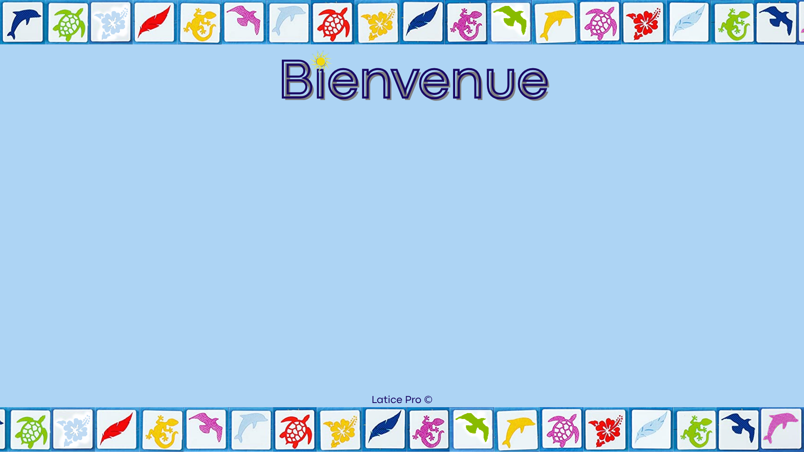

casino
Principes du jeu Latice & Contexte
Latice est un jeu de société de stratégie combinatoire abstrait pour 2 à 4 joueurs. Le jeu se déroule sur une grille de 9×9 cases comprenant des emplacements spéciaux (cases Soleil et Lune).
Chaque joueur pioche des tuiles caractérisées par deux dimensions :
- 6 symboles : Dauphin, Tortue, Gecko, Oiseau, Plume, Fleur.
- 6 couleurs : Bleu, Cyan, Jaune, Magenta, Rouge, Vert.
Pour poser une tuile adjacente à une ou plusieurs tuiles déjà placées sur le plateau, elle doit obligatoirement partager soit la même couleur, soit le même symbole avec chacune de ses voisines directes. Poser des tuiles sur les cases spéciales ou réussir des combinaisons multiples rapporte des pierres précieuses conférant des actions supplémentaires (rejouer, échanger). Le premier joueur à vider son stock de tuiles remporte la manche.
account_tree
Architecture Orientée Objet (POO) & Découplage
Le projet a été pensé dès l'origine selon le patron d'architecture Modèle-Vue-Contrôleur (MVC) garantissant une indépendance absolue entre la logique de jeu et le rendu graphique.
gavel
Arbitre Central (metier.arbitre)
Moteur indépendant validant l'admissibilité des coups, le respect des correspondances orthogonales et le calcul des récompenses de pierres de vent/soleil.
grid_on
Modélisation Plateau & Tuiles
Structures immuables représentant les coordonnées, la grille de 9×9 cases, les racks de tuiles personnalisés et la pile de pioche pseudo-aléatoire équilibrée.
terminal
Interface Console
Rendu textuel interactif permettant le déroulement intégral d'une partie dans le terminal, indispensable pour automatiser les tests et le débogage rapide.
desktop_windows
Interface Riche JavaFX
GUI animée avec gestion d'événements souris (glisser-déposer de tuiles), bruitages sonores intégrés et vue contextuelle d'aide aux règles.
photo_library
Captures de l'interface JavaFX

Écran d'accueil & Options
fullscreen

Plateau 9×9 & Guide des règles
fullscreen
terminal
Extraits de code & Validation des règles
Extrait de l'arbitre vérifiant la validité d'un placement selon les tuiles voisines :
// Vérification de la compatibilité d'une tuile avec ses voisines
public boolean estPlacementValide(Plateau plateau, Tuile tuile, Coordonnee coord) {
if (!plateau.estCaseVide(coord)) {
return false;
}
List<Tuile> voisines = plateau.getTuilesAdjacentes(coord);
if (voisines.isEmpty() && !plateau.estPremierCoup()) {
return false; // Doit être collée à au moins une tuile existante
}
// Chaque voisine doit partager soit la couleur, soit la forme
for (Tuile voisine : voisines) {
boolean matchCouleur = tuile.getCouleur().equals(voisine.getCouleur());
boolean matchForme = tuile.getForme().equals(voisine.getForme());
if (!matchCouleur && !matchForme) {
return false; // Violation de la règle de correspondance
}
}
return true;
}
fact_check
Qualité logicielle & Tests unitaires
Une attention particulière a été portée à la fiabilité mathématique et logique du moteur :
- Tests unitaires JUnit 5 : Validation de tous les scénarios de placement (croisements en angle, triple correspondance, pose centrale, tentative de superposition).
- Gestion des cas limites : Cas de pioche vide, égalités aux points de soleil, tours consécutifs avec pierres de vent.
- Intégration Maven : Pipeline de build standardisé automatisant l'exécution des tests à chaque compilation.